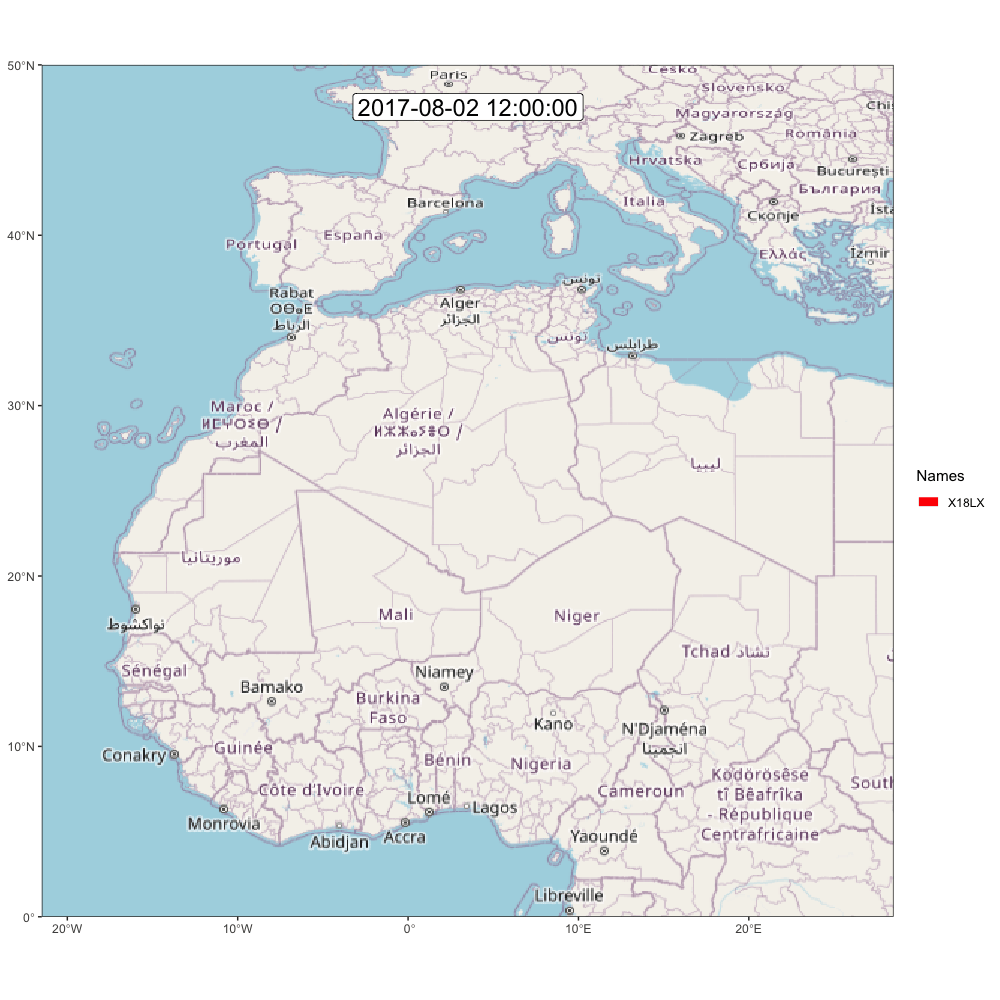

load("./data/interim/18LX.Rdata")Appendix A — Export and Visual
In this chapter, we will see how to create additional figures and export the data.
A.1 Export to open format
In addition to saving the graph object, you might want to export the three products. We recommend storing these in "./data/processed" in a standard format which can be opened with other softwares.
For all data.frame formats (e.g., stap, pressurepath, path_most_likely etc…), a .csv is the best option.
A.1.1 Stationary periods
We can add additional information on stationary periods such as altitude or duration:
# Compute summary stats of altitude, grouped by stap_id
stap <- merge(
tag$stap,
data.frame(
stap_id = sapply(split(pressurepath$stap_id, pressurepath$stap_id), median),
alt_mean = sapply(split(pressurepath$altitude, pressurepath$stap_id), \(x) round(mean(x), 1)),
alt_med = sapply(split(pressurepath$altitude, pressurepath$stap_id), \(x) round(median(x), 1)),
alt_min = sapply(split(pressurepath$altitude, pressurepath$stap_id), \(x) round(min(x), 1)),
alt_max = sapply(split(pressurepath$altitude, pressurepath$stap_id), \(x) round(max(x), 1))
)
)
# The duration can also be computed with
stap$duration <- round(stap2duration(stap), 2)
write.csv(stap, glue::glue("./data/processed/{tag$param$id}/stap.csv"), row.names = FALSE)Note that the most likely path contains all the information from stap and could be used instead if you want to have the best estimate of the coordinates of stationary periods.
A.1.2 Flights
Similarly, flights can also be exported:
pp_f <- pressurepath[pressurepath$stap_id != round(pressurepath$stap_id), ]
pp_f$stap_s <- floor(pp_f$stap_id)
pp_f$stap_t <- ceiling(pp_f$stap_id)
flight <- merge(
stap2flight(tag$stap),
data.frame(
stap_s = sapply(split(pp_f$stap_s, pp_f$stap_s), median),
stap_t = sapply(split(pp_f$stap_t, pp_f$stap_s), median),
alt_mean = sapply(split(pp_f$altitude, pp_f$stap_s), \(x) round(mean(x), 1)),
alt_med = sapply(split(pp_f$altitude, pp_f$stap_s), \(x) round(median(x), 1)),
alt_min = sapply(split(pp_f$altitude, pp_f$stap_s), \(x) round(min(x), 1)),
alt_max = sapply(split(pp_f$altitude, pp_f$stap_s), \(x) round(max(x), 1))
)
)
write.csv(flight, glue::glue("./data/processed/{tag$param$id}/flight.csv"), row.names = FALSE)A.1.3 GeoPressureR maps
GeoPressureR maps can be exported in a .geotiff file using terra::writeRaster after you convert them to a terra::rast using rast.map().
terra::writeRaster(rast.map(tag$map_pressure),
glue::glue("./data/processed/{tag$param$id}/map_pressure.tif"),
filetype = "GTiff", overwrite = TRUE
)
terra::writeRaster(rast.map(tag$map_light),
glue::glue("./data/processed/{tag$param$id}/map_light.tif"),
filetype = "GTiff", overwrite = TRUE
)
terra::writeRaster(rast.map(marginal),
glue::glue("./data/processed/{tag$param$id}/map_marginal.tif"),
filetype = "GTiff", overwrite = TRUE
)A.1.4 Parameters
During the entire workflow, tag$param and graph$param record all the essential parameters used to create the likelihood map and the graph. It is therefore interesting to export this structure for reproducibility.
A.2 Visuals
A.2.1 Movevis
Let’s try to create some beautiful visual trajectories using MoveVis.
Because the path encodes the position during the entire stationary period, we need to produce a data.frame with the position at the start and end of each stationary period. We can do this with the following function:
library(moveVis)
path_most_likely$duration <- stap2duration(path_most_likely)
m <- df2move(path_most_likely,
proj = "+init=epsg:4326 +proj=longlat +datum=WGS84 +no_defs +ellps=WGS84 +towgs84=0,0,0",
x = "lon", y = "lat", time = "start", track_id = "j"
)
# Use midday position rather than midnight (while the bird could be flying)
m <- align_move(m, res = 24, unit = "hours", digit = 12)
# remove the long equipement and retrival period duration
m <- subset_move(m,
from = max(min(m$time), tag$stap$end[1] - 3 * 60 * 60 * 24),
to = min(max(m$time), tail(tag$stap$start, 1) + 3 * 60 * 60 * 24)
)
# Create frames
frames <- frames_spatial(m, equidistant = TRUE, ext = raster::extent(tag$param$tag_set_map$extent)) |>
add_labels(x = NULL, y = NULL) |> # add some customizations, such as axis labels
add_timestamps(type = "label", size = 6) |>
add_progress()It is worth checking what a frame looks like before generating the entire gif (which takes around 10 min to compute), using:
plot(frames[[100]])If you’re satisfied, then go for it!
animate_frames(frames, out_file = glue::glue("./assets/movevis_{tag$param$id}.gif"), height = 1000, width = 1000, overwrite = T)And here is the map! Check out moveVis examples for more ideas.

A.2.2 ggpmap
Enter your google map API (see documentation of ?register_google())
library(ggmap)
library(cowplot)
register_google("googlemap_key")# Convert to data.frame
df <- rast.map(marginal)[[istap_winter]] |>
terra::disagg(5, method = "bilinear") |>
as.data.frame(xy = TRUE)
names(df)[3] <- "layer"
# Compute the percentile
df <- df[!is.na(df$layer), ]
df <- df[order(df$layer), ]
df$layerP <- 1 - cumsum(df$layer) / sum(df$layer)
# Add plot
p <- p0 +
geom_contour(df, aes(x = x, y = y, z = layerP, color = after_stat(level)), linewidth = 2, breaks = c(.5, .1)) +
scale_colour_gradient(
high = "red",
low = "white",
limits = c(0, .1),
guide = "none"
)plot_inset <- ggplot() +
borders("world", colour = "gray90", fill = "gray50", linewidth = 0.1) +
coord_quickmap(
xlim = c(-18, 51),
ylim = c(-35, 37),
expand = FALSE
) +
geom_rect(
aes(
xmin = layer_scales(p0)$x$range$range[1],
xmax = layer_scales(p0)$x$range$range[2],
ymin = layer_scales(p0)$y$range$range[1],
ymax = layer_scales(p0)$y$range$range[2]
),
color = "red", alpha = 0.1, linewidth = 1
) +
theme_map() +
theme(
panel.border = element_rect(colour = "black", fill = NA, linewidth = 1),
panel.background = element_rect(fill = "#FFFFFF")
)
pf <- ggdraw() +
draw_plot(p) +
draw_plot(plot_inset, x = .15, y = .06, width = 0.35, height = 0.35)ggsave(plot = pf, "assets/wintering_location.png")
A.2.3 More ideas
Check the Resources section to see what others have done with this method!